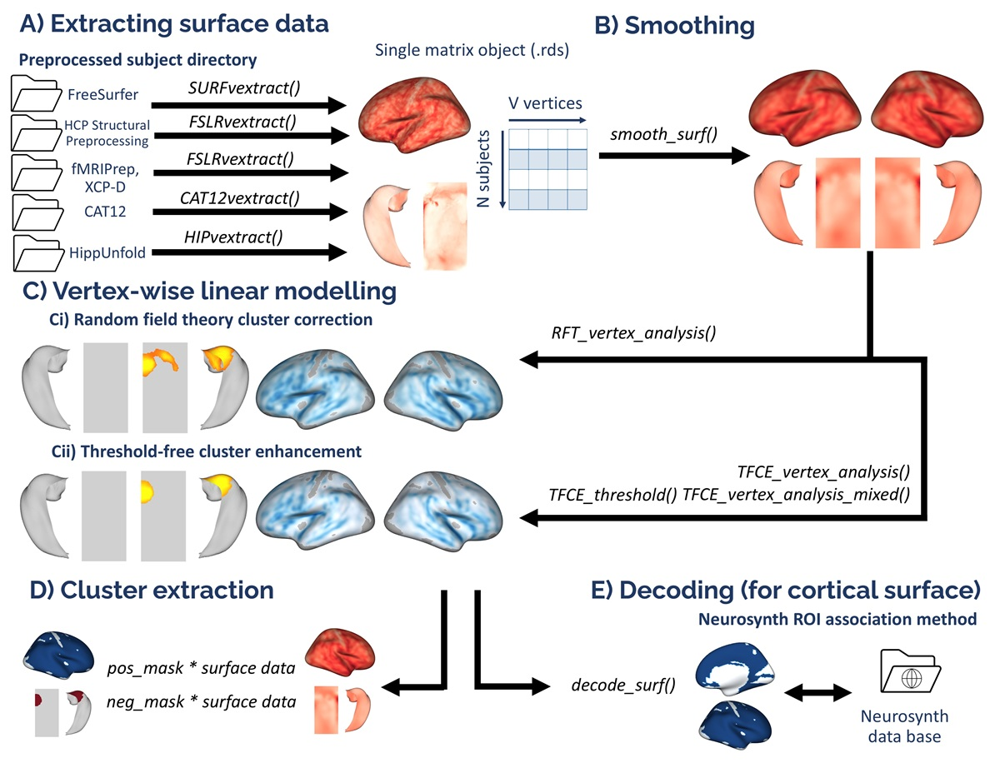

VertexWiseR: a package for simplified vertex-wise analyses of whole-brain and hippocampal surface in R

Setting up for the first time
VertexWiseR can be installed and loaded using the following code in R:
install.packages('VertexWiseR')
library(VertexWiseR)
##Alternatively
#install.packages("devtools")
#devtools::install_github("CogBrainHealthLab/VertexWiseR")VertexWiseR imports and makes use of the R package reticulate. reticulate is a package that allows R to borrow or translate python functions into R. Using reticulate, the package calls functions from the BrainStat Python module. Brainstat also comes with a number of fsaverage templates that need to be downloaded for use with VertexWiseR cortical analyses.
For ‘reticulate’ to work properly with VertexWiseR, a Python environment must be installed with it — the default choice offered by VertexWiseR is to let reticulate (version 1.41.0) create an ephemeral Python virtual environment using UV and py_require(). Alternatively, Miniconda — a lightweight version of Python -, or a suitable version of Python can be installed.
A function can be run to download and install all the system requirements (Python environment, BrainStat, BrainStat’s fsaverage/parcellation templates) if they are not installed yet:
Note: A pop-up/prompt from reticulate asking ‘Would you like to create a default Python environment for the reticulate package?’ may appear. Clicking Yes will let reticulate install Python in a virtual environment. This is entirely optional. Simply click No/Cancel to ignore.
Alternatively, advanced users may specify a pre-installed python environment using reticulate’s use_python() or use_virtualenv() functions.
Loading datasets
For this example, we use Spreng and colleagues’ neurocognitive aging openneuro dataset ds003592:
demodata = readRDS(system.file('demo_data/SPRENG_behdata_site1.rds', package = 'VertexWiseR'))The dataset T1 weighted images were preprocessed using the recon-all FreeSurfer pipeline. This tutorial will not reiterate these steps. For a detailed guide about surface extraction (from FreeSurfer, fMRIprep, HPC and HippUnfold outputs), see the Extracting surface data in VertexWiseR article.
Here, we explain how, from a given FreeSurfer subject directory, VertexWiseR extracts surface-based measures and synthesizes the whole-sample data into a compact matrix object (.rds) for later analyses.
SURFvextract() gives the opportunity to extract surface-based measures including ‘thickness’, ‘curv’, ‘sulc’, and ‘area’. Here, we were interested in cortical thickness (CT), so the command which we entered to extract CT from the Spreng dataset was as follows (the sdirpath is just an example):
SURFvextract(sdirpath = "spreng_freesurfer_subjectsdir/", filename = "SPRENG_CTv.rds", measure = "thickness") A cortical thickness matrix object extracted from the Spreng dataset is included in the VertexWiseR git repository and can be loaded with the following code:
Smoothing the surface data
VertexWiseR gives the option to smooth the surface data with a desired full width at half maximum (FWHM) value. It can also optionally directly be done as an option for RFT_vertex_analysis() which will be discussed below. Here, we smooth it before the analysis at 10 mm:
SPRENG_CTv = smooth_surf(SPRENG_CTv, 10)Preparing the model
The vertex-wise analysis model works as a multiple regression model where the Dependent Variable/outcome is the CT at each vertex, and you will decide which Independent Variables/predictors to enter into the model to predict the vertices’ CT. In this example, we shall use age and sex to predict CT. Among these IVs, we are mostly interested in age, sex being entered into the model to control for its confounding influence on CT. We thus select those two variables and save them into a new data.frame called all_pred.
The actual analysis
The next code chunk runs the analysis. There is an optional p parameter for the RFT_vertex_analysis() function to specify the p threshold; default p is set to 0.05. The atlas with which to label the significant clusters can also be set (1=aparc/Desikan-Killiany-70 (default), 2=Schaefer-100, 3=Schaefer-200, 4=Glasser-360, 5=Destrieux-148).
The second line displays the results.
results=RFT_vertex_analysis(model = all_pred, contrast =all_pred$age, surf_data = SPRENG_CTv, atlas = 1)
print(results$cluster_level_results)## $`Positive contrast`
## clusid nverts P X Y Z tstat region
## 1 1 142 0.015 -22.8 11.5 -42 6.45 lh-temporalpole
## $`Negative contrast`
## clusid nverts P X Y Z tstat region
## 1 1 8039 <0.001 47 4.0 -16.6 -12.64 rh-superiortemporal
## 2 2 7660 <0.001 -34 -25.7 16.2 -14.23 lh-insulaIn the above results, the clusters that appear under the Positive contrast section are clusters of vertices which correlate positively with your contrast variable, vice-versa for the Negative contrast.
nverts: number of vertices in the clusterP: p-value of the clusterX, Y and Z: MNI coordinates of the vertex with the highest t-stat in the clustertstat: t statistic of the vertex with the highest t-stat in the clusterregion: the region this highest t-stat vertex is located in. Here, it is determined/labelled using the Desikan atlas
Plotting
plot_surf(surf_data = results$thresholded_tstat_map, filename = 'sigcluster.png', surface = 'inflated', cmap = 'seismic')surf_data: A numeric vector (length of V) or a matrix (N rows x V columns), where N is the number of subplots, and V is the number of vertices. It can be the output from SURFvextract(), FSLRvextract(), CAT12vextract(), HIPvextract() as well as masks or vertex-wise results outputted by analyses functions.filename: A string object containing the desired name of the output .png. Default is ‘plot.png’ in the R temporary directory (tempdir()).Only filenames with a .png extension are allowed.-
cmap(optional) : A string object specifying the name of an existing colormap or a vector of hexadecimal color codes to be used as a custom colormap. The names of existing colormaps are listed in the .Default cmap is set to
"Reds"for positive values,"Blues_r"for negative values and"RdBu"when both positive and negative values exist. title(optional) : A string object for setting the title in the plot. Default is none. For titles that too long to be fully displayed within the plot, we recommend splitting them into multiple lines by inserting “\n”.surface(optional) : A string object containing the name of the type of cortical surface background rendered. Possible options include"white","smoothwm","pial"and"inflated"(default). The surface parameter is ignored for hippocampal surface data.

Extracting the CT values for each subject
If you want to carry out some follow-up analyses (e.g., mediation), you might want to extract, for each subject in the dataset, the mean CT in the significant clusters colored in red (positive clusters). You can simply do a matrix multiplication (operator for matrix multiplication :%*%) between the CT data SPRENG_CTv and the positive mask results$pos_mask . A mask in the context of brain images refers to a vector of 1s and 0s. In this case, the vertices which are within the significant clusters are coded as 1s, vertices outside these significant clusters are coded as 0s. sum(results$pos_mask) gives you the sum of all the 1s, which essentially is the number of significant vertices.
Thus, the SPRENG_CTv %*% results$pos_mask is divided by sum(results$pos_mask) to obtain an average CT value. Here, this average CT is saved into a new variable sig_avCT within the demodata dataframe.
## [,1]
##[1,] 2.769453
##[2,] 3.003829
##[3,] 2.586192
##[4,] 2.851196
##[5,] 3.199390
##[6,] 3.050331As a sanity check, these mean CT values should correlate with age
cor.test(demodata$sig_avCT,demodata$age)Introduction
After running the whole-brain vertex-wise analyses, you may be able to identify regions in the brain in which cortical thickness (CT) values are significantly different between groups or these CT values predict a certain IV significantly. How do we make sense of these regions? We can plot out the results using the plot_surf() function, but still, it may be difficult to interpret the results in terms of the functional relevance of the regions identified. Here we present a tool that you can use to facilitate such interpretations.
What this tool does is correlate your input image (cortical surface maps obtained from an earlier vertex-wise analysis, currently supporting fsaverage5 surface space) with images from a large database of task-based fMRI and voxel-based morphometric studies. Each of these images in the database is tagged with a few keywords, describing the task and/or sample characteristics. The correlations that are carried out essentially measure how similar your input image is to each of the images in the database. Higher correlations would mean that your input image looks very similar to a certain image in the database, thus the keywords associated with that image in the database would be highly relevant to your input image.
In this example, we will first run a whole-brain vertex-wise analysis to compare the cortical thickness between males and females in the young adult population of the SPRENG dataset. The thresholded cortical surface maps obtained from this analysis will then be fed into an image-decoding procedure to identify keywords that are relevant to our results
Source custom-made R functions from Github
The NiMARE python module is needed in order for the imaging decoding to work. It is similarly imported by VertexWiseR via reticulate in the decode_surf_data() function.
Load and prepare data
Vertex-wise analysis
results=RFT_vertex_analysis(model = all_pred, contrast =all_pred$sex, surf_data = dat_CT)
results$cluster_level_results## The binary variable 'sex' will be recoded with F=0 and M=1 for the analysis
##
## smooth_FWHM argument was not given. surf_data will not be smoothed here.
##
## $`Positive contrast`
## clusid nverts P X Y Z tstat region
## 1 1 301 <0.001 -40.7 -13.0 16.5 5.06 lh-postcentral
## 2 2 181 0.002 56.3 12.1 -10.1 4.43 rh-superiortemporal
## 3 3 150 0.003 21.9 -51.6 -1.2 4.41 rh-lingual
##
## $`Negative contrast`
## [1] "No significant clusters"
plot_surf(surf_data = results$thresholded_tstat_map,filename = "sexdiff.png")According to these results, since the female sex is coded as 0 and males as 1 (this can be done manually beforehand), the regions colored in red are thicker in males.
Image decoding
Now, let’s enter the thresholded_tstat_map into the decode_img() function. The previous results only contained positive clusters. But in case of bidirectionality, the function requires to choose one direction with the contrast option. In this instance, we simply decode the positive clusters, by setting contrast="positive".
If you are running this for the first time, a ~7.5 MB file neurosynth_dataset.pkl.gz needs to be downloaded to your current directory for the decoding to work. This file will contain the images from the Neurosynth database that will be correlated with your input image. Run VWRfirstrun(requirement=‘neurosynth’) to assist you with the data’s installation.
keywords=decode_surf_data(surf_data=results$thresholded_tstat_map, contrast = "positive")##Converting and interpolating the surface data ...
##✓
## Correlating input image with images in the neurosynth database. This may take a while ...
##
##✓
print(keywords[1:10,])## keyword r
##449 pain 0.099
##50 auditory 0.098
##648 temporal 0.093
##617 speech 0.092
##334 listening 0.089
##607 sounds 0.070
##450 painful 0.068
##4 acoustic 0.062
##397 music 0.062
##398 musical 0.062The above procedure will display the top 10 keywords from images in the database that are the most correlated with your input image. According to these results, you can see that the positive clusters (which are thicker in males) are typically found to be associated with pain and auditory processing. If you simply run keyword without specifying the index within the square brackets [1:10,]. All 715 keywords will be displayed.
In your presentation slides or results section of your paper, you might want to illustrate these keywords using the wordcloud and paletteer packages. You can set the size of the keyword to vary according to its r value:
#install.packages("wordcloud","paletteer")
library(wordcloud)
library(paletteer)
wordcloud(words = keywords$keyword, ##keyword input
freq = keywords$r, ##setting the size of the keyword to vary with its r value
min.freq = 0.05, ##minimum r value in order for the keyword to be displayed
colors=paletteer_c("grDevices::Temps", 10) ##color scheme
,scale=c(1,2)
)
par(mar = rep(0, 4))These keywords may not be very accurate but they should give a rough idea for interpreting your results. Take note that these keywords are specific to the positive clusters.